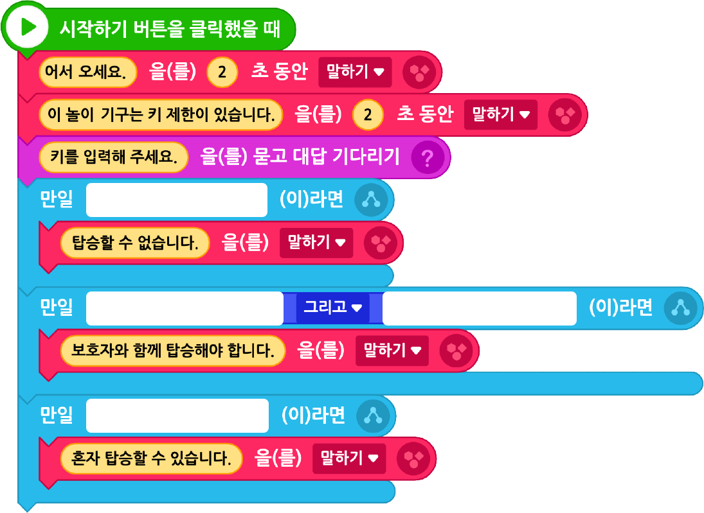

놀이공원에서 놀이 기구를 타려고 하는데, 키에 따라 탑승에 제한이 있다고 한다. 탑승자의 키를 입력하면 놀이 기구를 탈 수 있는지 자동으로 안내하는 프로그램을 작성해 보자.
1프로그램이 시작되면 “키를 입력하세요.”를 말한다.
2키를 입력받는다.
3100cm 미만은 “탑승할 수 없습니다.”,
100cm 이상~110cm 미만은 “보호자와 함께 탑승해야 합니다.”,
110cm 이상은 “혼자 탑승할 수 있습니다.”를 말한다.
실행 화면
- 오브젝트
-
엔트리봇 이모티콘(1)_1
놀이동산(1)
잔디 언덕(1)
아래 블록을 참고하여 프로그램을 작성해 보자.

엔트리봇 이모티콘(1)_1

화면의 크기를 좌우로 조절하면 블록을 크게 볼 수 있어요.